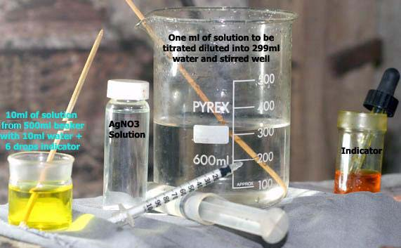
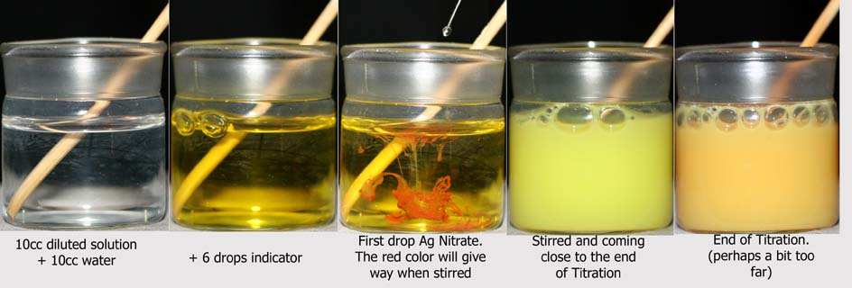

Weigh out 1.453 grams Silver Nitrate and dissolve in approx. 40 cc water and make the solution up to 50cc. Store in a stoppered bottle. This quantity of reagent will do at least 50 tests.
concentration of Na Chloride in grams per liter | Add to |
| 0 to 350 | 349cc |
| 0 to 200 | 199cc |
| 0 to 100 | 99cc |
| 0 to 50 | 49cc |
NaCl(grams per liter) = ['Add to' value from table + 1] * [cc's AgNO3 solution used]
KCl(grams per liter) = ['Add to' value from table + 1] * 1.276 * [cc's AgNO3 solution used]
Example: If the estimated value of Na Chloride was 150 g/l and 0.6 cc of AgNO3 solution was used
to precipitate all Chloride (permanent slightly red colour obtained), then the Na Chloride concentration is:
[199 + 1] * 0.6 = 120 grams per liter NaCl.

Note on accuracy:
The best you can do with a diabetic syringe is ±0.02 cc (one drop off needle). When using the 0 to 350 dilution this gives an error which corresponds to ±7 grams per litre Chloride in a sample. In a 4 liter cell this will give an error of 4 * 7 = 28 grams Chloride for a particular time. If two samples taken in succession have a 0.02cc titration error going in the opposite direction this will give a error of 2 * 28 = 56 grams (Sodium) Chloride in the cell which corrosponds to an error of 56 * 1.82 = 102 grams (Sodium) Chlorate. This can have serious implications if using measurements to ascertain %CE if only a small amount of Ah's have been ran through the cell between samples. Run a fairly large quantity of Amper hours through the cell between samples. Alternatively you can dilute the Silver Nitrate solution to make a dilution of four times greater that recommended above. That's 1.453 grams Silver Nitrate in 200 cc water. You will need to add four times as much of this now diluted solution to obtain end conditions (red colour). This will give an maximum error of ±1.75 grams Chloride, down from ±7.0, assuming of course that you are still measuring to ±0.02ml. The formula for obtaining Sodium Chloride concentration will now be:
NaCl(grams per liter) = ['Add to' value from table + 1] * [cc's AgNO3 solution used]/4
Some points:
If taking samples from a cell to track CE make sure the cell volume is the same at each sampling time.
Use a diabetic syringe with an integral needle as they are more accurate.
Use a dedicated syringe for the Nitrate and Chloride solutions.
Always eliminate bubbles from syringes.
Weigh the Silver Nitrate as carefully and as accurately as possible.
Hyprchlorites or Chlorites do not interfere with the test but it should be noted that if you test a
sample from a cell and then test the same cell contents that has been boiled, there will be a small increase
in Chloride concentration due to destruction of the Hypochlorites. Boiling increases the amount of Na Chloride by approx. 2 to 3 grams per litre assuming Hypochlorite concentration is approx. 4 to 6 grams per litre (value in commercial cells).
There is a more exacting Chloride titration procedure in the Sodium Chlorate section under "Collection of Graphs and Tables".
| Molecular weights | |
|---|---|
| NaCl | 58.45 |
| NaClO3 | 106.45 |
| Ratio | 1.82 |
HIT THE BACK BUTTON ON YOUR BROWSER